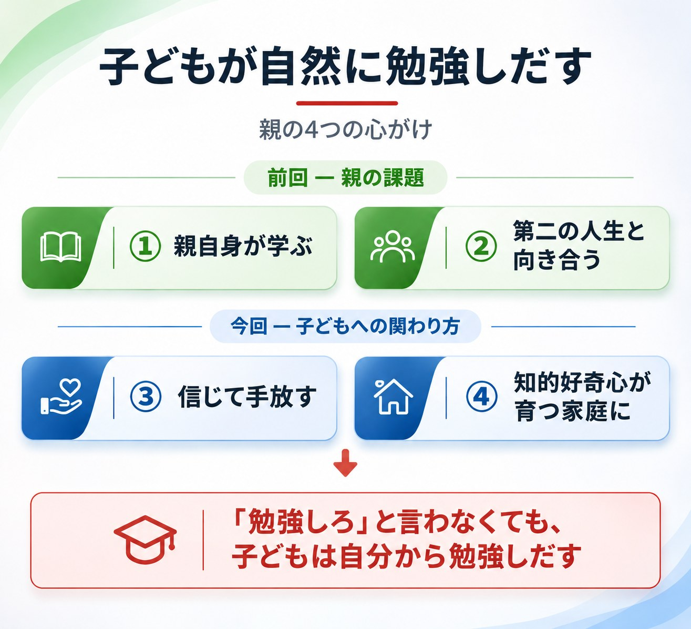
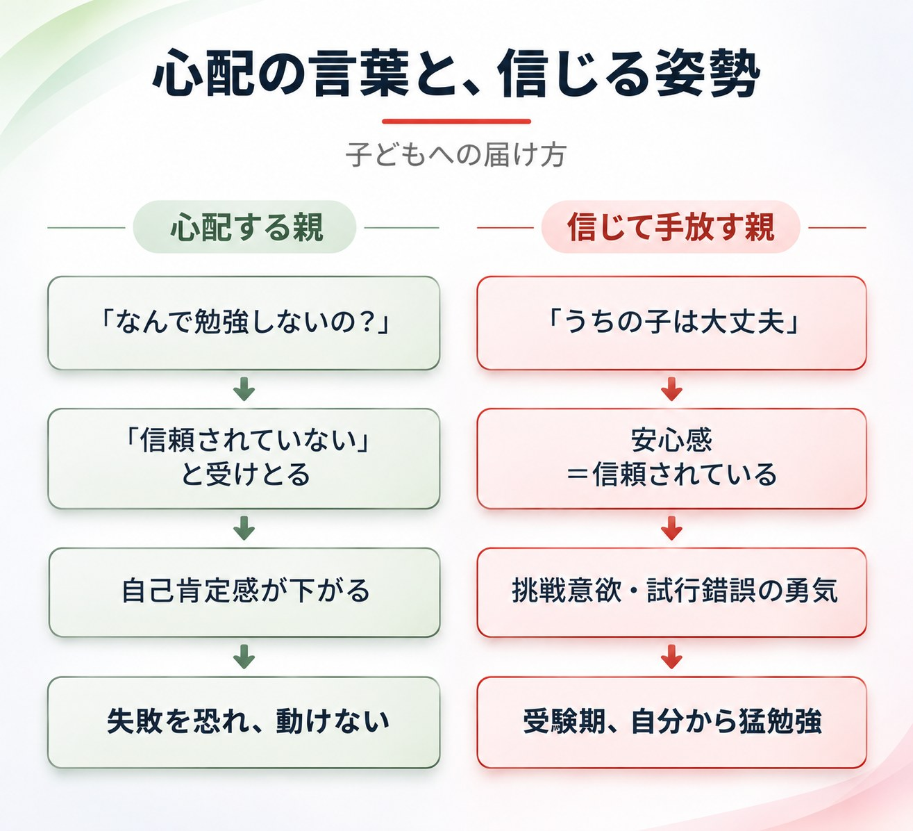
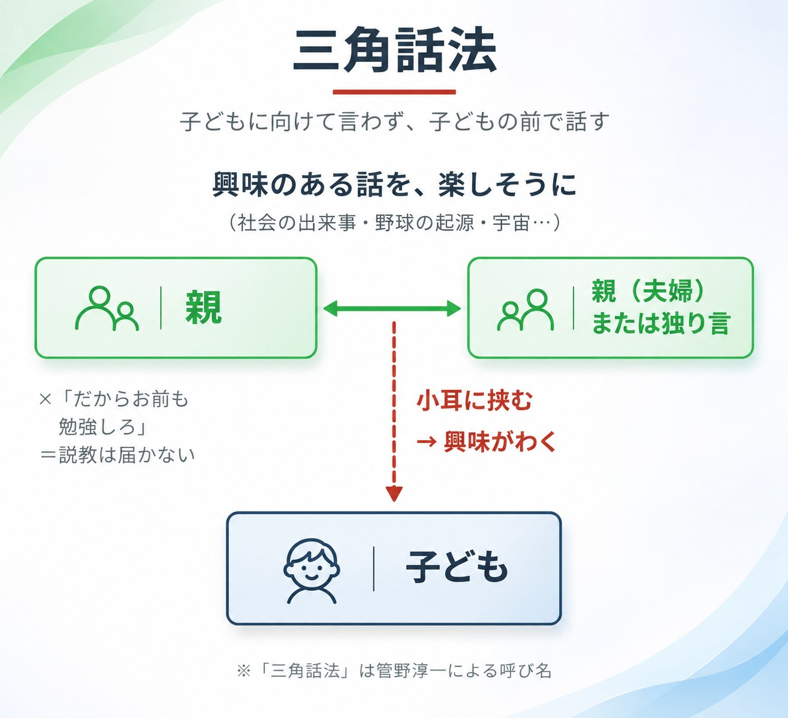

前回は、子育てをしている親の皆さんに、二つのことを申し上げました。一つは、子どもに勉強してほしかったら、自分が勉強しなさいということ。もう一つは、子を持つ親 ── 40代、50代の人という前提で言えば ── ちょうどその世代は第二の人生の始まりの時期であり、自分の第二の人生とどう向き合うかが、自分のやるべきこと、自分の課題だということです。心理学者アドラーの「課題の分離」の話をしました。子どもの勉強は子どもの課題であり、本当は親が介入するものではないんです。
このシンプルな二つを実行していただければ、子どもは自然と勉強するようになります。これは経験上、言えることです。私は40年以上、高校教師、塾の経営、学校の先生方の研修、教育委員会の先生方との対話、そして保護者の皆様とも5000人以上お話ししてきました。その結果として言えることです。
今日はこれに、お子さんに関して二つ付け加えます。三つ目は、子どもを信じて手放すこと。四つ目は、子どもの知的好奇心を育てるような家庭環境を心がけること。合計で四つになります。この四つを実行すれば、「勉強しろ」「テストが近いのに何やってるの」とお説教しなくても、そんなところにエネルギーをかけなくても、子どもは勝手に勉強しだす。そのことをお伝えしたいと思います。

第一部 ── 行き詰まりは、先延ばしの結果
少し話を戻します。私はもう70代で、この仕事を45年以上やっていますが、いろんな親御さんを見てきて思うのは ── もしかしたら40代、50代になって、仕事の面などで行き詰まりを感じている方がいるのではないか、ということです。感じていなかったらお詫びしますし、生き生きと仕事をされている方も多いと思います。けれど、これは世界的に言われることで、「中年の危機」1という言葉があります。
20代、30代までは、社会に適応し、社会の常識を身につけることにエネルギーをかけてきた。それによって、本来自分がやりたかったこと、自分の本質に合っていることを我慢して、先延ばしにしてきた。それが影響しているんです。そのことと向き合う必要がある。
第二部 ── 信じて手放す
§1 ── 「かるた大会の決勝に出るので」
すごく優秀なお子さんは、いっぱいいます。私は進学塾をやっていたので、東大などの有名校に受かるお子さんも多かった。そういう親子を見ていて、共通していることがあるんです。それは ── 例外なく、親が自分のことをやっている。自分がやるべきことをやっている。趣味でもいいんです。
東京の、一番東大に受かる高校がありますよね。そこに受かったお子さんが何人かいて、あるお母さんの話です。塾ですから親子面談をやる。「お子さん、今こういうふうに頑張っていますよ」「英語がちょっと伸び悩んでいますが」と、こちらは話すわけです。するとそのお母さんは「どうでもいいんです」と。「私、今、全日本かるた大会の決勝に出るので、子どものことなんか構っていられないんです」。ちょうど受験が近い、12月ぐらいだったと思います。普通の親なら受験のことで頭がいっぱいで浮き足立っているのに、そのお母さんは、かるた大会のことで頭がいっぱいだと言う。
かるた、テニスといった趣味に夢中な人。ボランティアを一生懸命やっている人。自分で起業して忙しくて「ちょっと子どもの面倒を見きれないわ」という人。つまり、子どもとうまく距離を取っているんです。子どもを信じて、手放している。これが、最強の親の態度なんです。
§2 ── 心配は、「信頼していない」というメッセージ
子どものことをあれこれ心配して、「このままでいいのかしら」「こんな調子では受からないんじゃないか」と目先のことばかり心配している親御さんは、結局、子どもを信頼していないんです。きつい言い方かもしれませんが、本当のことだから言います。心配する、「なんで勉強しないの」「もっとやらないとダメなんじゃないの」と焦って言う ── 子どもはそれを、どう受け止めるでしょうか。
それは「自分は信頼されていない」という、強烈なメッセージなんです。
これを小学校からやっている親がいるわけです。勉強しない、勉強しないと言われ続けて、子どもは「自分はダメな人間だ」と、自己肯定感がすごく下がる。
逆に、「うちの子は大丈夫だ」と信じる。勉強しないならしない。でもそれがこの子の本質なら、勉強以外のところで頑張るんじゃないの、と。性格もいいし友だちも多いから大丈夫、別にそんなにいい高校・いい大学に行かなくても ── こういうふうにすっぱり割り切れている親の子どもは、不思議なことに、受験が近くなるとめちゃくちゃ勉強しだしたりするんです。
何を隠そう、私の子どもたちもそうでした。私には5人子どもがいますが、一度も「勉強しろ」と言ったことがない。これは子どもも証言していますから確かです。成績は中程度でしたが、受験期、特に大学受験になると、気が狂ったように勉強して、「そんな大学を受けて大丈夫か」というところばかり受けて、幸い全部受かる。それを見て思いました。
生徒たちが親に感謝する言葉があります。20代、30代、40代になって出てくるのですが ── 親が自分を信頼してくれていた。余計な「こうしろ、ああしろ」を言わずに、好きなようにやらせてくれた。それが安心感につながる。安心するということは、自分は信頼されているという気持ちになるということで、信頼されていると挑戦意欲が湧く。なぜかというと、失敗しても怒られないという自己肯定感の高さがあるから、試行錯誤する勇気があるんです。

親がそんなに心配するということは、要は失敗を恐れているわけでしょう。失敗を恐れ、子どもに失敗させたくないという親は、やはりちょっと愚かだと思います。人間は、いろんな失敗を重ねて向上していくのですから。
第三部 ── 知的好奇心を育てる環境
§3 ── 三角話法
四つ目の、知的好奇心を育てる環境づくり。これも非常に大事で、子どもに何かをさせよう、ではないんです。親が、自分の仕事を通じて、あるいは自分が興味関心を持っているテーマについて話す。
私もよく、今社会で起こっていること ── たとえば、なぜロシアはウクライナに侵攻したのか、というホットな話題を、子どもたちの前で独り言のようにつぶやきます。妻と話したりもする。メディアの報道だけ見ていると分からない背景があります。ヨーロッパは国境があってないようなもので、ロシアはナポレオンに、ナチスに、もっと古くはモンゴルに攻められてきた。地政学的に見れば、攻められてきた国でもある。NATOとの関係をどう見るか2。日本人は地政学のことをあまり知らないので、私は子どもたちに、目先のことだけでなく、そういう背景、本質を知ってもらいたくて、そういう話をしょっちゅうするわけです。
もっと簡単な話もします。野球はどうしてこういうルールになったのか。元はイギリスのクリケットで、イギリス人は「野球のオリジナルはクリケットだ」と言うし、アメリカ人は「自分で作った」と言う。どっちなんだろう、とか。あるときは量子力学の話。自分が興味を持っていることを、なるべく子どもの前で、お説教にならずに話すということを心がけてきたし、親御さんにも勧めています。
そうすると、子どもは不思議なんです。聞いているんですよ。自分に向かって「お前、だから勉強しろよ」と言われるとお説教になるけれど、親同士が勝手に喋っていたり、独り言を言っていたりすると、子どもは耳をそばだてている。本当なんです。私はこれを「三角話法」と呼んでいます。親同士が話しているのを子どもが小耳に挟んで、それに興味を持つ。

§4 ── 「父がブラックホールの話をしてくれた」
実際、就職試験でも、今は面接重視です。ペーパーテストより面接が重視されるようになっている。宇宙開発の会社だとして、「なぜここを選んだんですか」「何がきっかけで宇宙に興味を持ったんですか」と聞かれて、「たまたま、父が子どもの頃にブラックホールの話をしてくれたので」と答える。それが決め手になることがある。
なぜか。ブラックホールという言葉を知っていたから受かったのではなくて、「父がそういう話をしていた」と面接官に言った。そのとき面接官は「この家庭ではそういう話が日常的にされているんだな、知的好奇心が強いんだな」と思う。そういうタイプが欲しいんです。今、企業はペーパーテストの点数なんか見ません。
そういうことを親が知らないと、大変なことになってしまう。ですから「子どもに勉強させたいなら、親のあなたがしなさい」というのは、そういうことなんです。仕事のことでも、興味関心のあることは常に調べたり、勉強している。社会に出てからも勉強している人しか、成功しないんです。
§5 ── 大企業に入れば安心、は絶対にない
大企業に入ったら安心、ということは絶対にありません。今、大企業だって年収は上がらない。この間、ある銀行が新入社員に年俸1000万円を出すという話がありましたが、それはアメリカの大学院で金融工学の専門性をがっちり身につけた、25、26歳の人を10人。残りは普通の年収です。その差は埋まらない。年功序列はもうない。高度成長の頃のような価値観で、「いい大学に行って大きな会社に行けば一生クビにならないだろう」── クビにならないかもしれないけれど、リストラには結構なるし、退職金も出ないというところまで、大きな企業でもなっている。
むしろ大企業に行くと、かえって潰しの効かない人間になる可能性がある。システムがきちんとしているので、システムでガチガチになった部分しか自分の仕事としてやらない。転職して中小企業に行ったら、全部やらなければいけないし、人間関係もコミュニケーション能力がないとやっていけない。そういう時代になっているんです。
第四部 ── 親が楽しそうじゃないから、大人になりたくない
親御さんに「第二の人生を大切にしましょう」と言ったのは ── 今、小中学生にアンケートを取ると、「大人になりたくない」と言うんです。私たちの世代は早く大人になりたかった。なぜ今の子はなりたくないのか。親が楽しそうじゃないから。仕事を楽しんでいない。あんなふうにいつも楽しめない大人になるのは嫌だな、と思っているんです。
偉そうな言い方をします。70代だから勘弁してください。皆さん、仕事を楽しんでいますか。生き生きと仕事をやっていますか。常に新しい課題を見つけて新しいことにチャレンジし、それについて文献を読んだりしているでしょうか。
私は、仕事というのは楽しくやるものだと思っています。塾を経営して40年ほどになりますが、ものすごく楽しかった。生徒が勉強しているのも、自分が勉強するのも。夜中の2時、3時まで仕事をして、家に帰るのは朝の4時、5時が普通でしたが、全然苦しくなかった。自慢話ではなく、本来、仕事は楽しいものだということです。勉強もそうです。知らないことを知っていく喜びがある。「テストのために勉強しなさい」では、勉強の楽しさが分からない。親も、学ぶことの楽しさを日常で体現していないと、子どもに伝えられないんです。
この間、私のやっていた塾で、社会人に来てもらって仕事の話を生徒の前でしてもらう機会がありました。たまたま生徒のお父様で、ご自身で仕事をされ、AIの開発などいろいろやられている方が、何十人かの生徒の前で話した。最近そのお父さんと口をきかなくなっていた思春期の娘さんが、それを見てすごく感動したらしい。お友だちから「あなたのお父さんすごいね」と言われたのでしょう。お父さんを見る目が変わり、態度も変わり、会話が復活した。お父様が非常に喜んでいました。
親が生き生きと仕事をしている姿を子どもが直に見る機会は、なかなかないかもしれません。でも、生き生きと仕事をしていたら、必ず伝わります。どんな仕事であってもそうだと思う。それが、第二の人生の一つのテーマになるのではないかと思います。
四つの心がけ
子を持つ親の方は、この四つを心がけてやっていただきたい。
1. 子どもに勉強してほしいなら、自分が勉強する。
2. 第二の人生と向き合う。子どもの課題と、自分の課題を分ける。
3. 子どもを信じて、手放す。
4. 知的好奇心を育てる家庭環境を心がける。
子どもに「勉強しろ」と言ったり心配したり、そういう無駄なエネルギーを使う必要はまったくありません。この四つをちゃんとやっていただければ、自然に子どもは勉強する。私は請け負います。質問や相談があれば、じゃんじゃん送ってください。私も本音で、45年分のお話をどんどんしていきます。
ご家庭で試してみてください
この講話を「読んで終わり」にしないために、今日から試せる小さな三つを置いておきます。
1. 受験や試験の話をしない代わりに、自分が今いちばん夢中なことの話をする。
かるたでもテニスでも仕事でも。子どもに向かってではなく、夫婦の間で、独り言で。
2. 「心配」を一つ、「信頼」の言葉に言い換えてみる。
「このままで大丈夫なの？」を「あなたなら自分で決められると思ってる」に。言葉を変えると、腹の中も少しずつ変わります。
3. 自分の仕事の面白いところを、子どもが聞こえる場所で一度話す。
説明しなくていい。「今日こんなことがあって面白かった」で十分です。